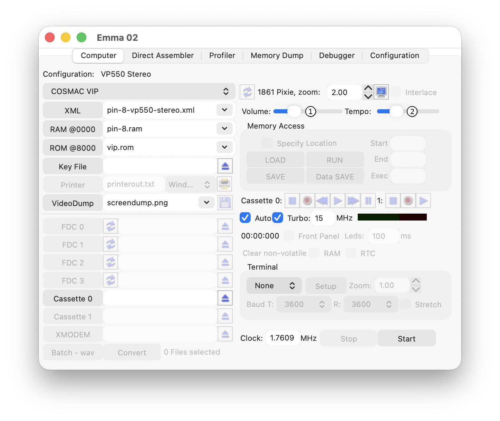
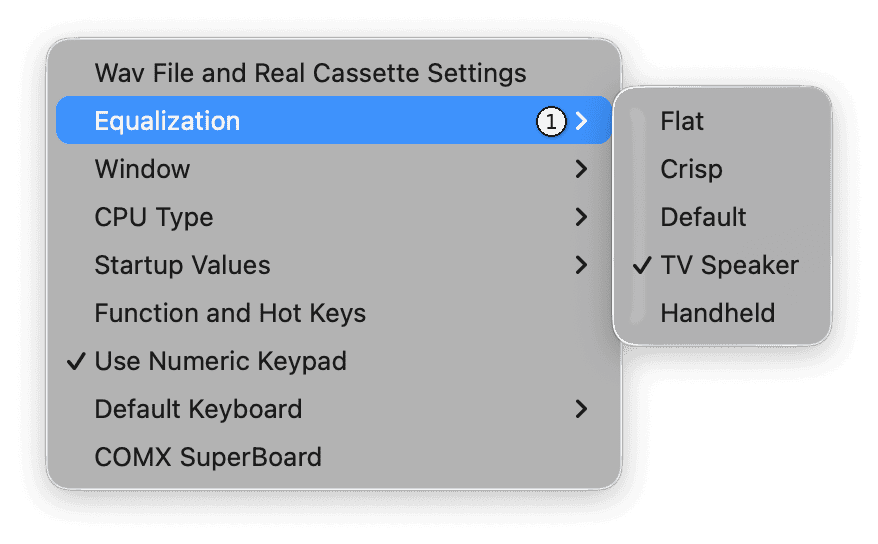

Sound emulation can be adjusted using the controls shown below.

Drag the Volume slider (1) to adjust the sound volume. Drag it to the far left to turn sound off.
The Tempo slider (2) is enabled when a COSMAC VIP with a VP550 or VP551 board is configured. Drag the slider to change the VP550/551 tempo.
Change the equalization using the Settings/Equalization menu (1) shown below. By default, TV Speaker is selected.
